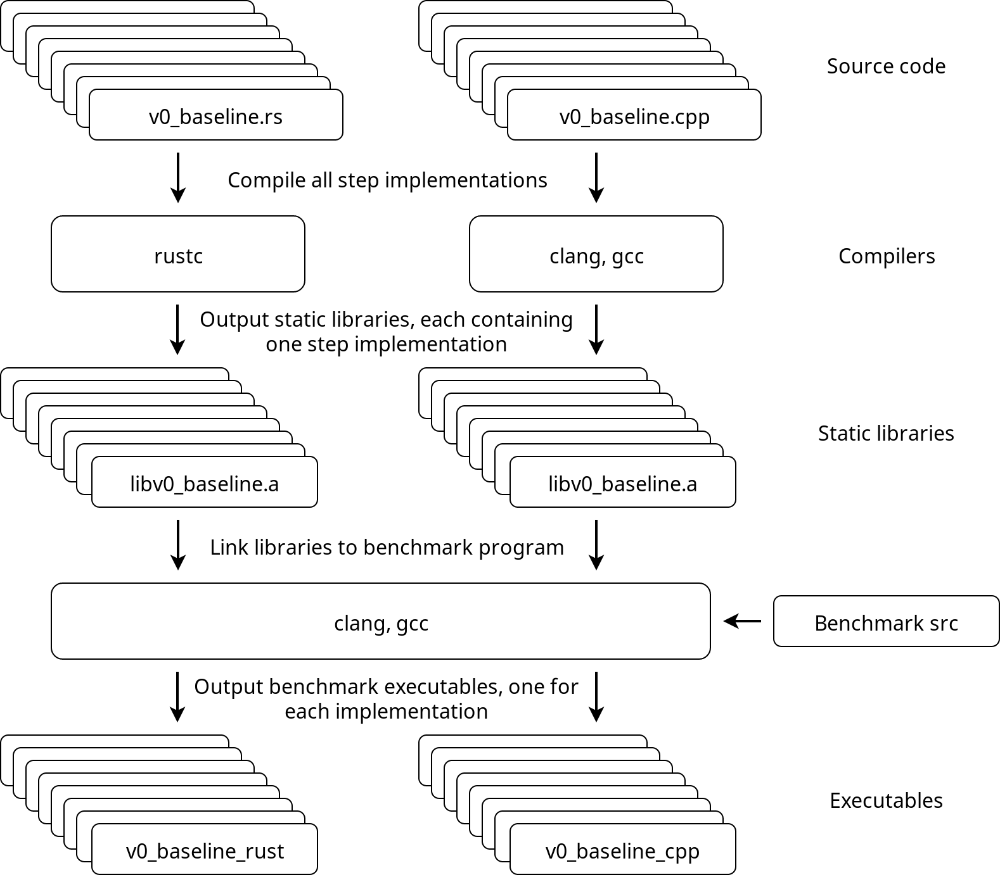

Introduction
In this tutorial, we will implement a Rust program that attempts to utilize 100% of the theoretical capacity of three relatively modern, mid-range CPUs.
We'll use an existing, highly efficient C++ implementation as a reference point to compare how our Rust program is doing.
We start with a simple baseline solution of 3 nested for-loops, and keep improving on the baseline solution incrementally, implementing 8 versions in total, until the program is going so fast it can hardly go faster.
We'll approach the problem from the point of view of a C++ programmer who already knows how the reference implementation solves the problem, but is interested in an approach using the Rust language.
Writing a program that pushes the CPU to its limits requires some understanding of the underlying hardware, which occasionally means reading the output of a compiler and using low-level intrinsics. I encourage you to also study the reference implementation materials, or at least keep them close by as we will be referencing to those materials quite often. The reference materials explain many important concepts very clearly, with intuitive visualizations that show why each incremental improvement makes the hardware execute the program faster.
Note that most of the optimization tricks shown in this tutorial are merely Rust-adaptations of the original C++ solutions.
Interestingly, this does not require as much unsafe-blocks as one would initially assume.
As we will see in this tutorial, safe Rust can be just as fast as a highly optimized C++ program.
The program
The program we will implement and improve on, is an Θ(n³) algorithm for a graph problem, which is described in more detail here as the "shortcut problem".
All input will consist of square matrices containing n rows and columns of single precision floating point numbers.
The reference implementations are all defined in functions called step and provide one baseline implementation with 7 incrementally improved versions of step.
We will implement 8 different step functions in Rust, each aiming to reach the performance of its corresponding C++ implementation.
It is important to note that we assume the algorithm we are using is the best available algorithm for this task. The algorithm will stay the same in all implementations, even though we will be heavily optimizing those implementations. In other words, the asymptotic time complexity will always remain at Θ(n³), but we will be doing everything we can to reduce the constant factors that affect the running time.
Incremental improvements
Here is a brief summary of all 8 versions of the step function that we will be implementing.
All implementations will be compiled as static libraries that provide a function called step, with C-language linkage.
Those static libraries will be linked to the benchmarking program that generates the data consisting of random floats and calls step with the generated data, while recording the amount of time spent executing the function.
| Library | Original | C++ | Rust |
|---|---|---|---|
v0_baseline | v0 | .cpp | .rs |
v1_linear_reading | v1 | .cpp | .rs |
v2_instr_level_parallelism | v2 | .cpp | .rs |
v3_simd | v3 | .cpp | .rs |
v4_register_reuse | v4 | .cpp | .rs |
v5_more_register_reuse | v5 | .cpp | .rs |
v6_prefetch | v6 | .cpp | .rs |
v7_cache_reuse | v7 | .cpp | .rs |
v0: Baseline
Simple solution with 3 nested for loops.
v1: Linear reading
Copy the input matrix and store its transpose in row-major order, enabling a linear memory access pattern also for the columns of the input matrix.
v2: Instruction level parallelism
Break instruction dependency chains in the innermost loop, increasing instruction throughput due to instruction level parallelism.
v3: SIMD
Pack all values of the input matrix, and its transpose, row-wise into SIMD vector types and use SIMD instructions explicitly, reducing the total amount of required instructions.
v4: Register reuse
Read the input and its transpose in 3-row blocks of SIMD vectors and compute 9 results for each combination of vector pairs in the block, reducing the amount of required memory accesses.
v5: More register reuse
Reorder the input matrix and its transpose by packing the data into SIMD vectors vertically, instead of horizontally. Read the vertically ordered data row-wise in pairs of 2 vectors, create 4 different permutations from the SIMD vector elements and compute 8 results for each pair, further reducing the amount of required memory accesses.
v6: Prefetch
Add prefetch hint instructions to take advantage of vacant CPU execution ports that are reserved for integer operations (since we are mostly using floating point arithmetic).
v7: Cache reuse
Add a Z-order curve memory access pattern and process input in multiple passes one vertical stripe at a time, slightly improving data locality from cache reuse.
Compilation infrastructure
Here's an approximate overview of the benchmark program and how everything is tied together.
